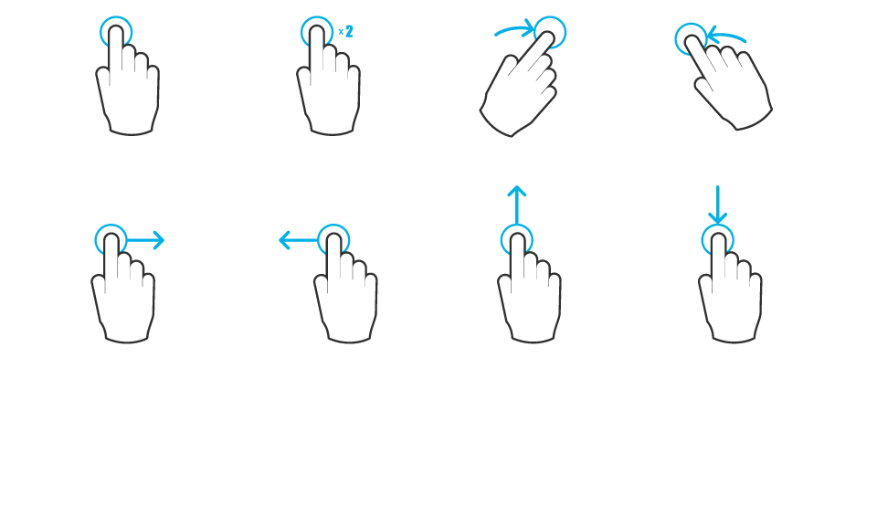
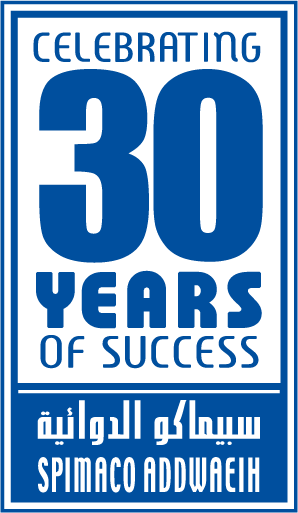
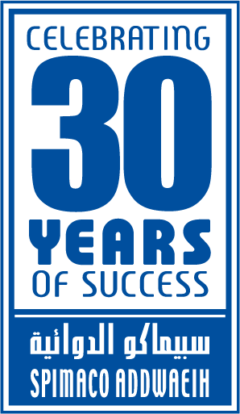

SPIMACO Cycle Meeting Agenda



 With Metro: you can reach the centre city very easily with the metro. You will need to buy the metro tickets, available at the station entrance. We would recommend buying the Istanbulkart, which can be reloaded whenever needed.
http://istanbulkart.iett.gov.tr/en/istanbulkart/pages/menu/427
With Metro: you can reach the centre city very easily with the metro. You will need to buy the metro tickets, available at the station entrance. We would recommend buying the Istanbulkart, which can be reloaded whenever needed.
http://istanbulkart.iett.gov.tr/en/istanbulkart/pages/menu/427
 By Taxi: We wouldn’t recommend this option unless you mind using public transportation, besides the traffic in Istanbul is horrible and you will probably pay more than you are expecting. If you choose this option, agree the price with the driver in advance.
By Taxi: We wouldn’t recommend this option unless you mind using public transportation, besides the traffic in Istanbul is horrible and you will probably pay more than you are expecting. If you choose this option, agree the price with the driver in advance.
By shuttle bus: this option is very practical in case you don’t want to walk around the city or pay a lot for a taxi. http://www.istanbul-ulasim.com.tr/media/24900/ag_2200px_1546px-01.jpg
Istanbul Taxi Fares Every Tourist Ought To Know https://www.theistanbulinsider.com/istanbul-taxi-fares-every-tourist-ought-to-know/


For further information about the meeting program and the competition, please contact organisers.
We wish you a pleasant stay & fruitful sessions.
SPIMACO Cycle Meeting Agenda
Feb., 2016

SPIMACO February 2016 Cycle Meeting
Another year of success and happiness has passed, with each New Year comes greater challenges in life.
In order to meet 2016 challenges, competition and environmental changes, our field force is the first line of defence and the ultimate point of contact between SPIMACO and its target customers, which emphasises the importance of this field force, as the most important and valued asset and to be SPIMACO’s Differentiating Factor.
On behalf of management we welcome you at the first gathering during 2016, this year is remarked by “Celebrating 30 Years of Success”. Those three decades with (1986-2016), reflect the power and efficiency of SPIMACO team and the cooperation between all SPIMACO assets to achieve 30 years of success.
During this gathering, we are looking forward to your valuable interaction in order to facilitate the processes of exchanging ideas, concepts and experiences. You are kindly requested to be prepared and energised from day one, the mission is challenging but sure is achievable.
The willingness to go an extra step is always the differentiation for winning teams We are fully confident that all of us have the courage, hope and faith to overcome, as one team, all the hurdles we might face. May you have a great year and a wonderful time ahead. Until we meet you during day to day sessions, we wish you all a pleasant stay.
Global Marketing Director
Dr. Ahmed El-Shaarawy
In order to meet 2016 challenges, competition and environmental changes, our field force is the first line of defence and the ultimate point of contact between SPIMACO and its target customers, which emphasises the importance of this field force, as the most important and valued asset and to be SPIMACO’s Differentiating Factor.
On behalf of management we welcome you at the first gathering during 2016, this year is remarked by “Celebrating 30 Years of Success”. Those three decades with (1986-2016), reflect the power and efficiency of SPIMACO team and the cooperation between all SPIMACO assets to achieve 30 years of success.
During this gathering, we are looking forward to your valuable interaction in order to facilitate the processes of exchanging ideas, concepts and experiences. You are kindly requested to be prepared and energised from day one, the mission is challenging but sure is achievable.
The willingness to go an extra step is always the differentiation for winning teams We are fully confident that all of us have the courage, hope and faith to overcome, as one team, all the hurdles we might face. May you have a great year and a wonderful time ahead. Until we meet you during day to day sessions, we wish you all a pleasant stay.
Global Marketing Director
Dr. Ahmed El-Shaarawy
Dear All
Its our pleasure to invite all SPIMACO sales and marketing KSA team for February 2016 Cycle Meeting in Istanbul from 7th - 14th February 2016.
SPIMACO will only sponsor the following on individual basis:
N.B. All exceptional cases (±) will be managed after the cycle meeting and consider with Feb., salary.
Dress Code:
Cycle Meeting Days: Smart casual - days 9th,10th, 12th, &13th Feb., 2016 or traditional dress for Saudi gentleman’s.
Annual Meeting Day: Formal dark suite - Thursday 11th Feb., 2016 or traditional dress for Saudi gentleman’s.
Its our pleasure to invite all SPIMACO sales and marketing KSA team for February 2016 Cycle Meeting in Istanbul from 7th - 14th February 2016.
SPIMACO will only sponsor the following on individual basis:
- Round trip airfare.
- Hotel accommodation (Bed and breakfast).
- Transportation Airport - Hotel - Airport.
- Transportation: Home - KSA Airport - Home.
- Internal transfers: during staying period in Istanbul except [Istanbul airport - Hotel - Istanbul airport] will be arranged and covered by SPIMACO.
- Meals: during staying period except (breakfast, two business lunches during the cycle meeting days [9th & 10th and/or 12th &13th] and gala dinner on 11th Feb., these meals will be covered by SPIMACO).
- SAR #1,000 for attending periods [7th - 12th, 8th -13th or 9th 14th] Feb., 2016.
- SAR #1,200 for attending period [7th - 14th] Feb., 2016.
- You'll have to directly settle any other extra hotel expenses (telephone calls, mini bar, room service, internet & laundry, etc…).
N.B. All exceptional cases (±) will be managed after the cycle meeting and consider with Feb., salary.
Dress Code:
Cycle Meeting Days: Smart casual - days 9th,10th, 12th, &13th Feb., 2016 or traditional dress for Saudi gentleman’s.
Annual Meeting Day: Formal dark suite - Thursday 11th Feb., 2016 or traditional dress for Saudi gentleman’s.
Istanbul 7th - 14th February, 2016 Agenda
N.B. Marketing dept., Medical dept., National sales managers, District managers, Supervisors and Training team will associate their teams.
Thursday Meeting: SPIMACO official meeting will hold on Thursdays 11th Feb., 2016 in Fuji I&II 5th floor meeting rooms.
Friday Prayer: will hold in Fuji II 5th floor meeting rooms.
Thursday Meeting: SPIMACO official meeting will hold on Thursdays 11th Feb., 2016 in Fuji I&II 5th floor meeting rooms.
Friday Prayer: will hold in Fuji II 5th floor meeting rooms.
Agenda / Line
 Istanbul, Turkey Guide
Istanbul, Turkey Guide
 Flight Distance, Local Time & Currency
Flight Distance, Local Time & Currency
Distance from Makkah to Istanbul: 1496 miles / 2407.58 km / 1299.99 nautical miles, Approximate travel time is: 3 hrs, 8 mins.
Time in Istanbul, Turkey is (GMT+2).
Difference: 1 hour behind KSA.
Turkey Currency: Turkish Liras (₺, TL or TRY) = 1.00 TRY = 1.30 SAR = 0.347091 USD.
Turkish Lira Nicknames: Kağıt, Mangır, Papel.
Coins Freq. Used: ₺1, 5Kr, 10Kr, 25Kr, 50Kr, Rarely Used: 1Kr.
Banknotes Freq. Used: ₺5, ₺10, ₺20, ₺50, ₺100 Rarely Used: ₺200 http://www.xe.com/currency/try-turkish-lira.
Time in Istanbul, Turkey is (GMT+2).
Difference: 1 hour behind KSA.
Turkey Currency: Turkish Liras (₺, TL or TRY) = 1.00 TRY = 1.30 SAR = 0.347091 USD.
Turkish Lira Nicknames: Kağıt, Mangır, Papel.
Coins Freq. Used: ₺1, 5Kr, 10Kr, 25Kr, 50Kr, Rarely Used: 1Kr.
Banknotes Freq. Used: ₺5, ₺10, ₺20, ₺50, ₺100 Rarely Used: ₺200 http://www.xe.com/currency/try-turkish-lira.
Hotel
Swissotel The Bosphorus, Istanbul: is a five-star luxury hotel right in the centre of Istanbul on the European banks of the Bosphorus.
Address: Bayildim Cad. No.2 Macka ▪ 34357 Besiktas Istanbul ▪
Turkey TEL: +90 212 326 1100 ▪ Fax: +90 212 326 1122 ▪ istanbul@swissotel.com
Distance: between Ataturk International Airport and the hotel 32 Km, Drive Time: 30 min.
Walks from the Hotel: Please enjoy these attractions near Swissôtel The Bosphorus. These sights are within a brisk walk of your hotel. They will add joy and discovery to your visit:-
DOLMABAHCE PALACE: The largest palace in Turkey, this spectacular complex served as administrative headquarters for the Ottoman Empire for most of 1856 to 1922. 5 min.
NISANTASI Neighbourhood: Known for its Art Nouveau apartment buildings, many of Nisantasi's ground floors are occupied by upmarket restaurants, cafes, and stores lining the sidewalks. Taksim Square (Turkish: Taksim Meydanı), situated in the European part of Istanbul, Turkey, is a major tourist and leisure district famed for its restaurants, shops (2.1 km). https://s3.amazonaws.com/jtfprintouts/13525/
Swissotel_istanbul_13525_128.pdf
N.B. Please make sure that there are some items on the Breakfast buffet list is non-Halal (Mortadella Pork).
Hotel Website: http://www.swissotel.com/hotels/istan
bul/?cmpid=gistbrand02sa&gclid=Cj0KEQiAhuSzBRDBoZfG56bK9-
YBEiQARiPcZa4wif5qODQIbCWLA-zl1Rajc649mnY7t0tAtLc24ykaApVa8P8HAQ
Address: Bayildim Cad. No.2 Macka ▪ 34357 Besiktas Istanbul ▪
Turkey TEL: +90 212 326 1100 ▪ Fax: +90 212 326 1122 ▪ istanbul@swissotel.com
Distance: between Ataturk International Airport and the hotel 32 Km, Drive Time: 30 min.
Walks from the Hotel: Please enjoy these attractions near Swissôtel The Bosphorus. These sights are within a brisk walk of your hotel. They will add joy and discovery to your visit:-
DOLMABAHCE PALACE: The largest palace in Turkey, this spectacular complex served as administrative headquarters for the Ottoman Empire for most of 1856 to 1922. 5 min.
NISANTASI Neighbourhood: Known for its Art Nouveau apartment buildings, many of Nisantasi's ground floors are occupied by upmarket restaurants, cafes, and stores lining the sidewalks. Taksim Square (Turkish: Taksim Meydanı), situated in the European part of Istanbul, Turkey, is a major tourist and leisure district famed for its restaurants, shops (2.1 km). https://s3.amazonaws.com/jtfprintouts/13525/
Swissotel_istanbul_13525_128.pdf
N.B. Please make sure that there are some items on the Breakfast buffet list is non-Halal (Mortadella Pork).
Hotel Website: http://www.swissotel.com/hotels/istan
bul/?cmpid=gistbrand02sa&gclid=Cj0KEQiAhuSzBRDBoZfG56bK9-
YBEiQARiPcZa4wif5qODQIbCWLA-zl1Rajc649mnY7t0tAtLc24ykaApVa8P8HAQ
 Istanbul Airport
Istanbul Airport
Ataturk Airport: http://www.ataturkairport.com
The Check-in desks open approximately 3 hours before take-off…
Please track your flight on the detail screens
TURKISH AIRLINES*: Flight TK - Counter A/B/C01-16.
SAUDI AIRLINES*: Flight SV - Counter D.
QATAR AIRWAYS*: Flight QR - Counter F.
FLYNAS AIRWAYS*: Flight XY - Sabiha Gokcen International Airport (SAW).
*May Differ.
Please track your flight on the detail screens
TURKISH AIRLINES*: Flight TK - Counter A/B/C01-16.
SAUDI AIRLINES*: Flight SV - Counter D.
QATAR AIRWAYS*: Flight QR - Counter F.
FLYNAS AIRWAYS*: Flight XY - Sabiha Gokcen International Airport (SAW).
*May Differ.
How to Use Istanbul Underground Metro & Taxi
By shuttle bus: this option is very practical in case you don’t want to walk around the city or pay a lot for a taxi. http://www.istanbul-ulasim.com.tr/media/24900/ag_2200px_1546px-01.jpg
{kind=link}
Istanbul Taxi Fares Every Tourist Ought To Know https://www.theistanbulinsider.com/istanbul-taxi-fares-every-tourist-ought-to-know/
Prayer Time in Istanbul (7th-14th February)
Qibla pointer: are available inside the hotel room (Fajr 05:41 - Sunrise 07:15 - Isha 18:50)
http://www.islamicfinder.org/prayerPrintable.php?
city2=Istanbul&state=34&id=36008&longi=28.9647&lati=41.
0186&country2=Turkey&zipcode=&today_date_flag=2015-12-7
&changeTime=16&pmethod=1&HanfiShafi=1&dhuhrInterval=1&maghribInterval=1
&dayLight=1&dayl=1&timez=2.00&dayLight_self_change=&prayerCustomize=
&lang=&fajrTwilight=0&ishaTwilight=0&ishaInterval=0&month=2&year=2016
city2=Istanbul&state=34&id=36008&longi=28.9647&lati=41.
0186&country2=Turkey&zipcode=&today_date_flag=2015-12-7
&changeTime=16&pmethod=1&HanfiShafi=1&dhuhrInterval=1&maghribInterval=1
&dayLight=1&dayl=1&timez=2.00&dayLight_self_change=&prayerCustomize=
&lang=&fajrTwilight=0&ishaTwilight=0&ishaInterval=0&month=2&year=2016
Business Travel Weather Planner
for Istanbul, Turkey
- Hist. Avg. Hi 8° Lo 2°
http://www.accuweather.com/en/tr/istanbul
/318251/february-weather/318251
/318251/february-weather/318251
 How to Pack
How to Pack
As a general rule, February can be cold and wet with temperature around Hi 8°C & Lo 2°C on average.
Its a good idea to pack clothes we would suggest a sweaters, warm socks, a scarf and raincoat but possibly a lightweight one you could put over your warm coat and definitely comfortable, waterproof shoes or boots and light gloves.
You will not need voltage coverers abd adapter plugs for your electronics Istanbul runs on 220 volts, most computers will work just fine with a simple adapter plug.
Its a good idea to pack clothes we would suggest a sweaters, warm socks, a scarf and raincoat but possibly a lightweight one you could put over your warm coat and definitely comfortable, waterproof shoes or boots and light gloves.
You will not need voltage coverers abd adapter plugs for your electronics Istanbul runs on 220 volts, most computers will work just fine with a simple adapter plug.
Lets Go Shopping!
Apart from classical tourist souvenirs, here are a few of what you can bring back home from Istanbul:-
Leather clothing: Turkey is one of the biggest leather producers in the world.
Silk: Dresses and scarves.
Turkish delight & Turkish coffee.
Bargaining: in Turkey, bargaining is a must. One can bargain everywhere that doesn’t look too luxurious: shops, Taxi and so on. During your bargaining, don’t look so impressed and interested, and be patient. Since foreigners (especially Western people) aren’t expected to be good at bargaining, sellers are quick to reject any bargaining attempt (or are at least quick to look like so), but be patient and wait, the price will fall! (Don’t forget, even if you are successful at your bargaining attempt, when you get your credit card out of your wallet, rather than cash, the agreed price may rise again, though probably to a lower level than the original one).
VAT refund — You can get a VAT refund (currently 18% or 23% on most items) Look for the blue “Tax-Free” sticker on the windowpane or entrance of the shops, these kind of shops are the only places you can get a VAT refund. Don’t forget to take the necessary papers from the shop that will enable you for a VAT reclaim when leaving Turkey.
Shops opening hours:-
- Shops 9:30 to 19:00 (closed on Sunday).
- Covered Bazaar 8:00 to 19:00 (closed on Sunday).
- Shopping Malls 10:00 to 22:00 (everyday).
Leather clothing: Turkey is one of the biggest leather producers in the world.
Silk: Dresses and scarves.
Turkish delight & Turkish coffee.
Bargaining: in Turkey, bargaining is a must. One can bargain everywhere that doesn’t look too luxurious: shops, Taxi and so on. During your bargaining, don’t look so impressed and interested, and be patient. Since foreigners (especially Western people) aren’t expected to be good at bargaining, sellers are quick to reject any bargaining attempt (or are at least quick to look like so), but be patient and wait, the price will fall! (Don’t forget, even if you are successful at your bargaining attempt, when you get your credit card out of your wallet, rather than cash, the agreed price may rise again, though probably to a lower level than the original one).
VAT refund — You can get a VAT refund (currently 18% or 23% on most items) Look for the blue “Tax-Free” sticker on the windowpane or entrance of the shops, these kind of shops are the only places you can get a VAT refund. Don’t forget to take the necessary papers from the shop that will enable you for a VAT reclaim when leaving Turkey.
Shops opening hours:-
- Shops 9:30 to 19:00 (closed on Sunday).
- Covered Bazaar 8:00 to 19:00 (closed on Sunday).
- Shopping Malls 10:00 to 22:00 (everyday).
How to Have a Safe Trip
Pickpocketing: a common scheme is for one their to distract the tourist with questions (probably talk arabic).
Bootblack: Someone drops the brush boots in front of you. When you take to give them, thankful for you he will ask for polishing your shoes?!. Common beside Taksim Gezi Park.
Leave a wide berth and move away from the area quickly if you see two or more people begin to argue and fight as this may be a ruse to attract your attention while another person relieves you of your valuables.
Be alert, this often happens very quickly. Watch your belongings in crowded places and on public transport, especially on trams and urban buses, Taksim sq., Istiklal street and at stores where tourists leave wallets, passport, camera, cellphone and credit card on cashier counters during transactions. Avoid having more than $100 in can with you at a time, In the hotel keep valuables into the safe-box.
If you notice that your wallet has been stolen it is wise to check the nearest trash cans before reporting the loss to the police. It is often the case that thieves in Turkey will drop the wallet into the trash to avoid being caught in possession of the wallet and proven a thief.
Obviously it is highly likely that your money will no longer be in it, but there is a chance that your credit cards and papers will be.
Bootblack: Someone drops the brush boots in front of you. When you take to give them, thankful for you he will ask for polishing your shoes?!. Common beside Taksim Gezi Park.
Leave a wide berth and move away from the area quickly if you see two or more people begin to argue and fight as this may be a ruse to attract your attention while another person relieves you of your valuables.
Be alert, this often happens very quickly. Watch your belongings in crowded places and on public transport, especially on trams and urban buses, Taksim sq., Istiklal street and at stores where tourists leave wallets, passport, camera, cellphone and credit card on cashier counters during transactions. Avoid having more than $100 in can with you at a time, In the hotel keep valuables into the safe-box.
If you notice that your wallet has been stolen it is wise to check the nearest trash cans before reporting the loss to the police. It is often the case that thieves in Turkey will drop the wallet into the trash to avoid being caught in possession of the wallet and proven a thief.
Obviously it is highly likely that your money will no longer be in it, but there is a chance that your credit cards and papers will be.
Istanbul Opening Hours
Below you’ll find an overview (in alphabetical order) of what is open when and how long.
- Archaeological Museums (Arkeoloji Müzeleri)
- Open: daily from 09.00 – 17.00, no entrance after 16.00
- Closed: Monday.
- Big Palace Mosaic Museum (Büyük Saray Çinileri Müzesi)
- Open: daily from 09.00 – 16.30
- Closed: Monday.
- Blue Mosque (Sultanahmet Camii)
- Open: daily from 09.00 till dusk.
- Dolmabahçe Palace (Dolmabahçe Sarayı)
- Open: daily from 09.00 – 16.00
- Closed: Monday & Thursday.
- Egyptian or Spice Bazaar (Mısır Çarşısı)
- Open: daily from 08.00 – 19.00
- Closed: Sunday.
- Fethiye Museum (Fethiye Müzesi)
- Open: daily from 09.00 – 16.30
- Closed: Wednesday.
- Galata Tower (Galata Kulesi)
- Open: daily from 09.00 – 20.00
- Closed: no closing days.
- Grand Bazaar (Kapalı Çarşı)
- Open: daily from 08.30 – 19.00
- Closed: Sunday.
- Hagia Sophia (Ayasofya Müzesi)
- Open: daily from 09.00 – 17.00
- Closed: Monday.
- Harem (Harem)
- Open: daily from 09.30 – 17.00, lunch break from 12.00 – 12.30
- Closed: Tuesday.
- Kariye Museum (Kariye Müzesi)
- Open: daily from 09.00 – 16.30
- Closed: Wednesday.
- Malta Pavilion (Malta Köşkü)
- Open: daily from 09.00 – 22.00
- Closed: no closing days.
- Süleymaniye Mosque (Süleymaniye Camii)
- Open: daily from 09.00 – 17.30
- Şale Pavilion (Şale Köşkü)
- Open: daily from 10.00 – 16.00
- Closed: Monday and Thursday.
- Topkapi Palace (Topkapı Sarayı)
- Open: daily from 09.00 – 17.00
- Closed: Tuesday.
- Turkish & Islamic Art Museum (Türk İslam Eserleri Müzesi)
- Open: daily from 09.30 – 16.30
- Closed: Monday.
- Tünel (Tünel)
- Open: daily from 07.00 – 21.00
- Closed: no closing days.
- Yıldız Palace (Yıldız Sarayı)
- Open: daily from 09.30 – 16.30
- Closed: Tuesday.
- Yıldız Park (Yıldız Korusu)
- Open: day and night
- Closed: no closing days.
Football Matches [7th-14th]
- Galatasaray SK vs Konyaspor: Sun., 07th Feb., 2016 [19:00, Istanbul, Turkey -Turk Telekom Arena]*. http://www.sportsevents365.com/dock/competition/turkish-league#
- Al Ahly vs Zamalek: Tues., 9th Feb., 2016 [20:30, Cairo, Egypt - Borg El Arab Stadium. Their will be special arrangement for watching the match if you are interestedto watching the match with SPIMACO team kindly inform the organizers druing check-in
- *Date and time are subject to change.
2nd SPRINT (Flash Mob Competition)
Their will be special gift for the winner by 2nd SPRINT (SPIMACO Pep Rally Interactive National Tournament).
Best Flash Mob
Criteria: creative movie should not exceed 3-4 mins, and group should not be less than 6 pax from the same line.
General Rules: the movie should be committed to the company ethics and to public morality, movie subject could be funny, motivational, etc.
The Participated Group: should mention their team member’s full names and tasks with the video.
1st Competition: (HC, PC4, PC5, commercial Sales, SC2, SC3, CNS-1) & winner announcement will be in 10th, Feb.
2nd Competition: (PC1, PC2, PC3, PEDIA, GYNA, SC1, Government Team) & winner announcement will be in 13th, Feb.
Video Submission: Participated groups in competition should send their videos by email to tarek.ibarhim@spiamco.sa, one night before the meeting (can be shared via WeTansfer) https://www.wetransfer.com
General Rules: the movie should be committed to the company ethics and to public morality, movie subject could be funny, motivational, etc.
The Participated Group: should mention their team member’s full names and tasks with the video.
1st Competition: (HC, PC4, PC5, commercial Sales, SC2, SC3, CNS-1) & winner announcement will be in 10th, Feb.
2nd Competition: (PC1, PC2, PC3, PEDIA, GYNA, SC1, Government Team) & winner announcement will be in 13th, Feb.
Video Submission: Participated groups in competition should send their videos by email to tarek.ibarhim@spiamco.sa, one night before the meeting (can be shared via WeTansfer) https://www.wetransfer.com
Rooming Operator Network
MOBILY & ZAIN: select operator network: Vodafone / TURKCELL
STC: select operator network: AVEA / Vodafone
STC: select operator network: AVEA / Vodafone
We wish you a pleasant stay & fruitful sessions.